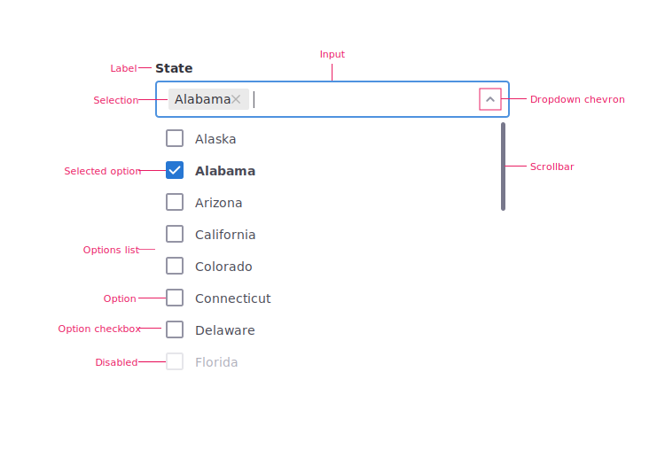
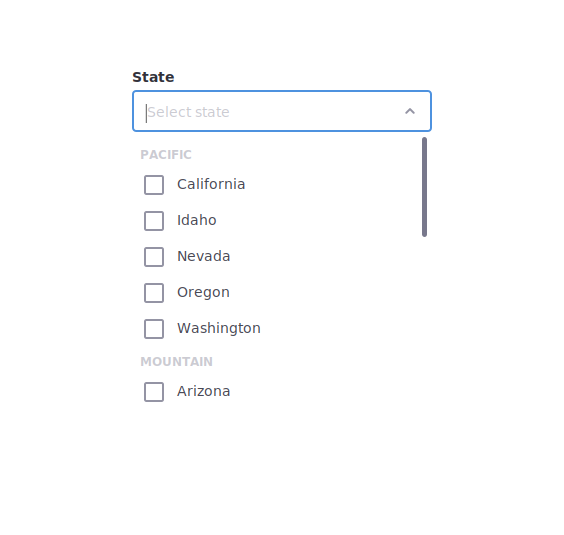
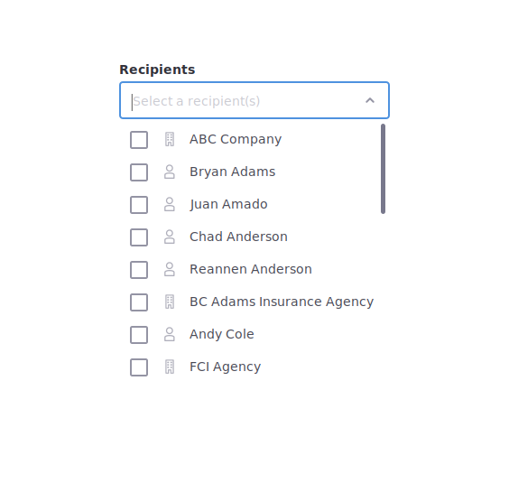
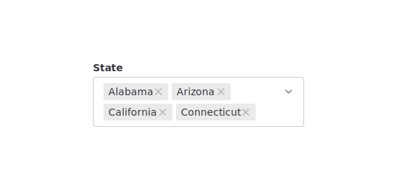

A dropdown multi-select is a type of input field in which a user fills an input box with one or many items from a list of acceptable inputs.
Appropriate for lists larger than 2 options that may require a user to select more than 1 option.
Text that defines what type of options are in the list.
The field designated for selecting an individual option from a grouping of related options.
Once an option is chosen, it becomes a selection. Selections are visually defined by the encapsulation of the text in a gray rectangle.
The chevron arrow, within the input suggesting that there are items to select within a dropdown.
An option that is visibly selected.
The grouping of related input options.
A unique input option.
A selectable checkbox beside an option.

The anatomy of a dropdown select.
Use the following links to find exact pixel specs for dropdowns multi-select.
Sort the list in a logical order. For instance, put the most selected option(s) at the top. In many cases we recommend alphabetical order.



Users on mobile and touch devices should not see our styling; instead the default styles native to the device should override ours, as these typically provide a better UX as they’re designed for use on that particular device.